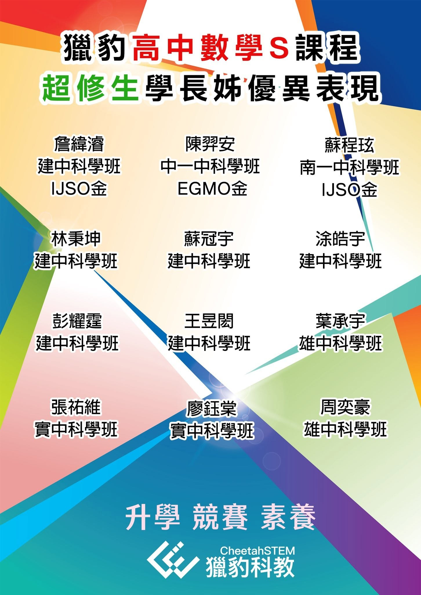

真有「高效率的學習」嗎？
獵豹的 專家模式 用一半的題量 超越兩倍的效率!!
#按讚留言+1參加
12/28 (六) AM 10:30，高中數學S直播講座 宗翰老師 主講
面對知識量驟增、題型變幻莫測的高中數學，許多人習慣以題海戰術應對，卻往往事倍功半，收效甚微。獵豹相信，高效率的學習來自「方法的精準」與「知識的結構化」，而非無止盡的刷題。當觀點正確時，解題不再是機械重複，而是對問題本質的深刻洞察；當知識有條理地存放在大腦中，考場上才能迅速提取，穩定發揮。
獵豹的專家模式，將系統化教學與AMC 解題訓練相結合，讓學生用一半的題量，達成兩倍的效率。12/28 (六) AM 10:30，宗翰老師將在直播講座中，帶你認識真正的高效率學習法。我們將解析如何在有限時間內透過專家模式，培養邏輯思維與解題觀點，找到適合自己的學習路徑。
歡迎學生和家長一起參與!
——
應屆生、超修生首選！的獵豹高中數學S資優進度課程,多位高中數學S超修生考上科學班,科奧金牌,EGMO台灣首屆唯一金
https://www.facebook.com/groups/695697124716309/permalink/1497357187883628/
獵豹APX 金牌大滿貫
https://www.facebook.com/share/p/LatwoGj612SG9coi/?mibextid=K35XfP
2024獵豹學子錄取科學班人數再創高峰（至少23人）
https://www.facebook.com/groups/695697124716309/permalink/1472675707018443/
詳見以下臉書連結：
https://www.facebook.com/share/p/1CiqjFTE9u/
